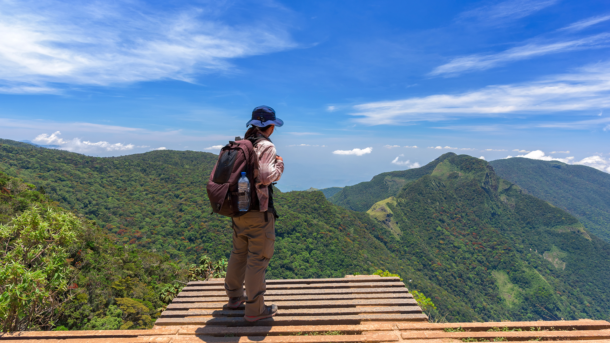
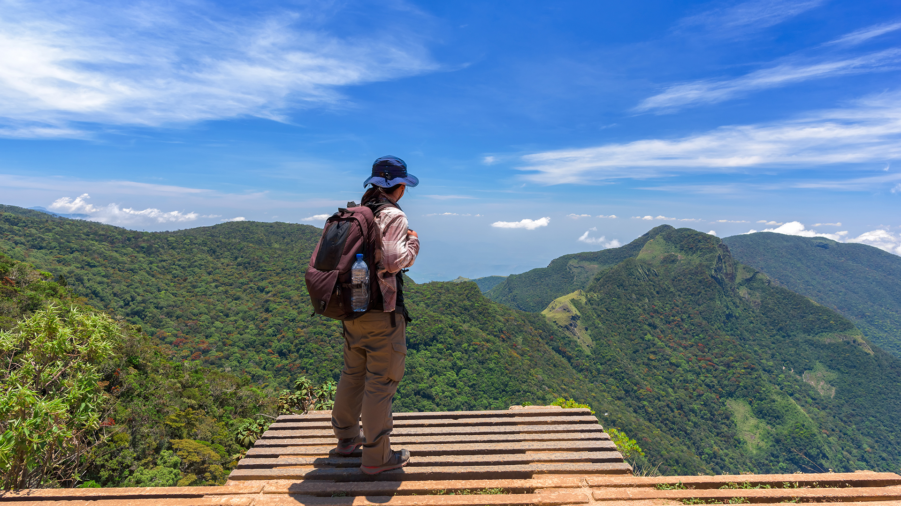
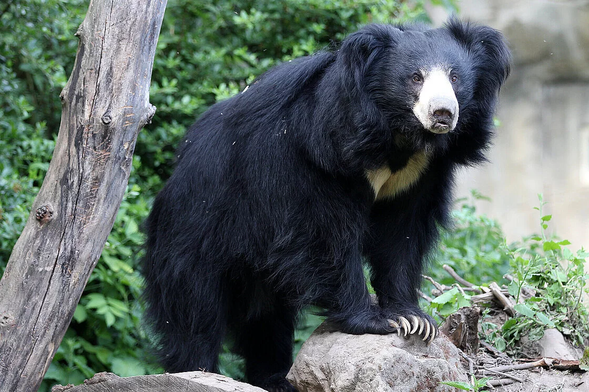

Sri Lankan Wildlife
Here are two wildlife locations in Sri Lanka
LOCATION ; Minneriya National Park

Minneriya National Park in Sri Lanka is a 88.9 square kilometers wildlife sanctuary, known for its diverse ecosystems and the "Elephant Gathering." The park attracts wildlife enthusiasts and tourists with its diverse habitats, including wetlands and evergreen forests. The Minneriya Tank, a historic reservoir built by King Mahasena in the 3rd century AD, sustains the park's wildlife and adds to its scenic beauty. Safari tours are popular for visitors to observe the park's wildlife and its open grasslands.
LOCATION ; Horton Plains National Park
 



Horton Plains National Park in Sri Lanka, established in 1988, spans 31.6 square kilometers and is known for its picturesque landscapes and unique biodiversity. The park features rolling hills, grassy plains, and mist-covered forests, with attractions like Baker's Falls and World's End. It is home to endemic species like the Horton Plains slender loris, sambar deer, purple-faced langurs, and bird species. Horton Plains was designated a UNESCO World Heritage Site in 2010 for its ecological significance. Visitors can enjoy a tranquil escape into nature.
Wildlife summary
| Animal Name | Interesting Facts | Image |
|---|---|---|
| Sloth Bear | This bear species is found in Sri Lanka and is known for its unique appearance and behavior. It can be spotted in various national parks. |  |
| Horton Plains Slender Lorist | Another endemic primate species, the slender loris is a nocturnal primate found in the park. |  |
| The purple-faced langur | An endemic primate species found in the montane forests of Sri Lanka, particularly in places like Horton Plains. |  |
| Sri Lanka's national parks, totaling over 8,000 square kilometers, are vital sanctuaries for the country's diverse wildlife | ||